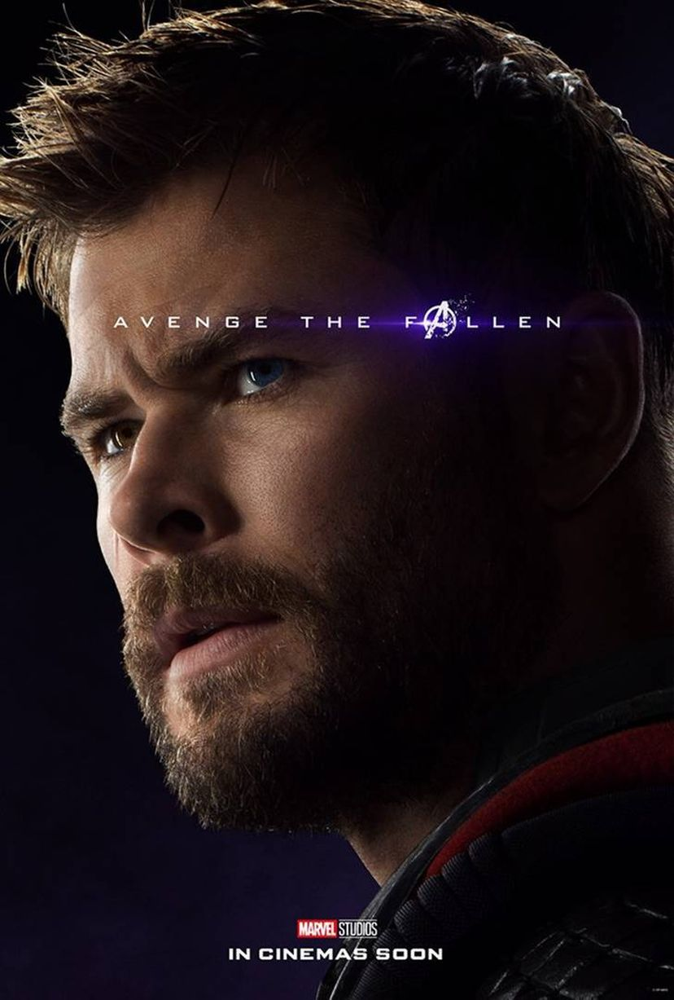

 O príncipe herdeiro de Asgard, com base na mitologia nórdica divindade de mesmo nome .Hemsworth foi escolhido como parte de um acordo de vários filmes. Ele já havia trabalhado com Joss Whedon em The Cabin in the Woods. Hemsworth disse que ele foi capaz de manter a força que ele construiu para Thor, aumentando a sua comida admissão, consistindo de peito de frango, peixe, carne e ovos todos os dias. Quando perguntado exatamente quanto, Hemsworth disse: "Meu peso corporal em proteína!", ele observou que a motivação de Thor "é muito mais de uma questão pessoal, no sentido de que ele e seu irmão que está agitando as coisas. Considerando todos os outros, é um cara mau que eles tem que levar para baixo. É uma abordagem diferente para mim, ou para Thor. Ele está constantemente tendo que lutar pelo bem maior e que ele deveria fazer contra ele é seu irmão mais novo... Eu tenho sido frustrado com meus irmãos, às vezes, ou a família, mas eu sou o único que tem permissão para estar zangado com eles. Há um pouco disso".